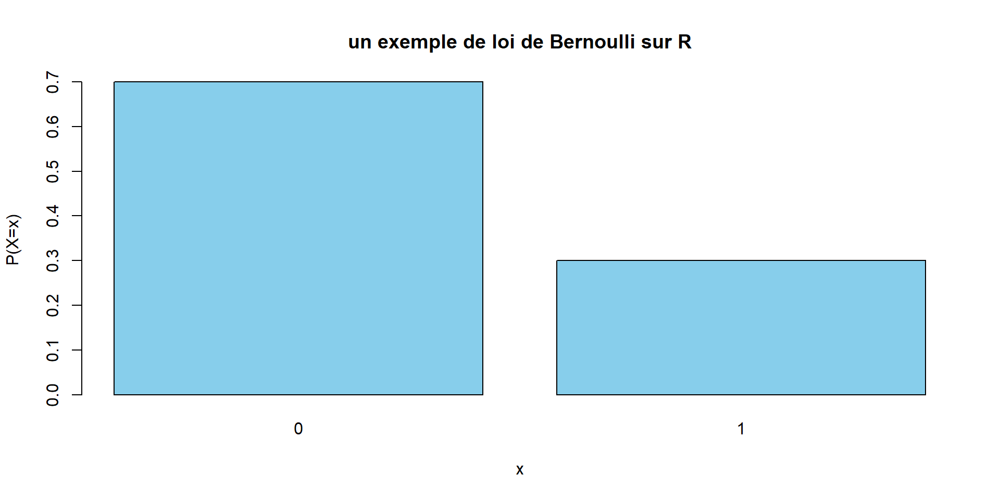
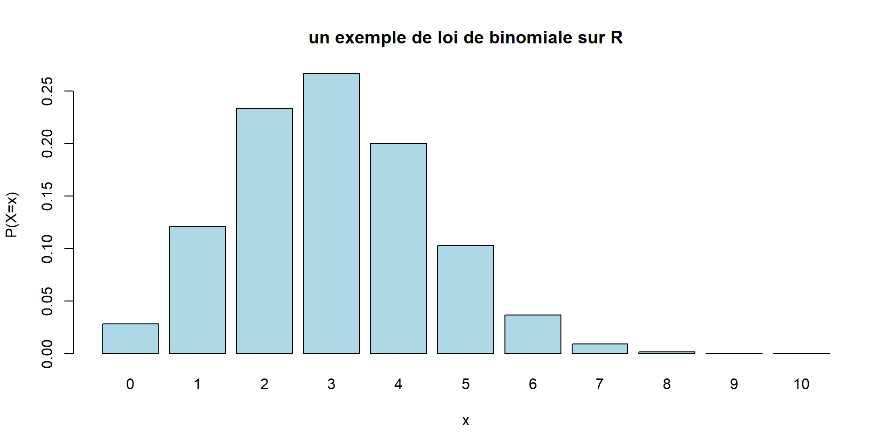
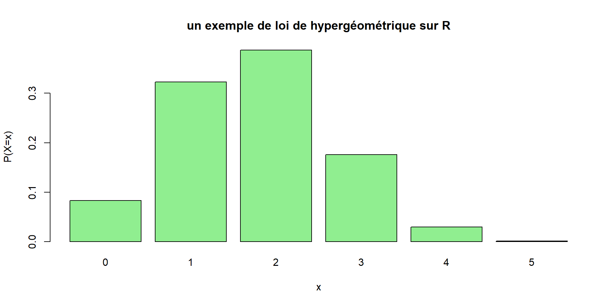
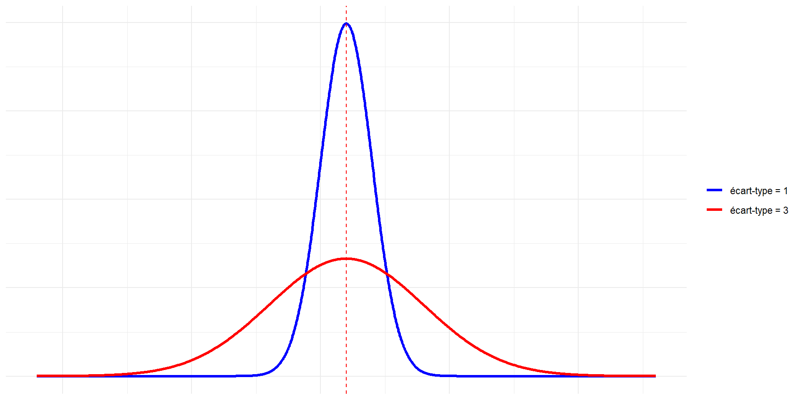
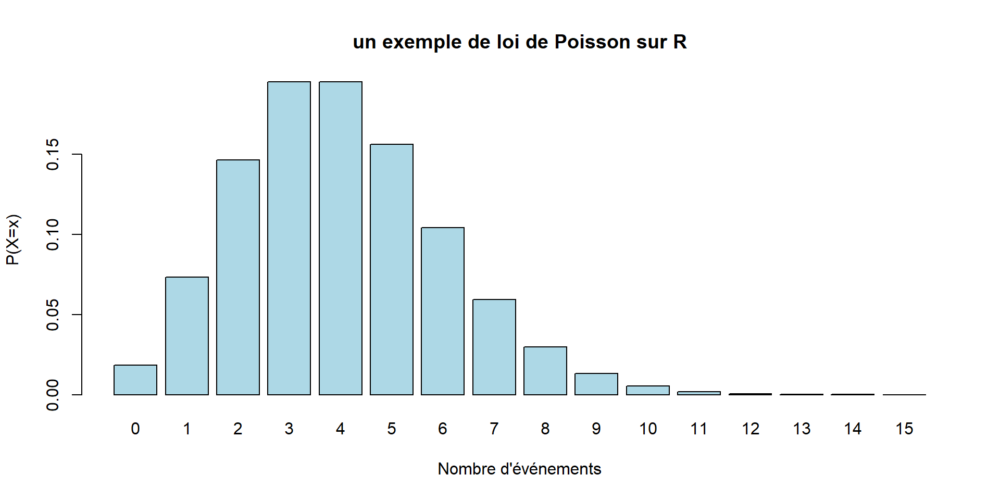
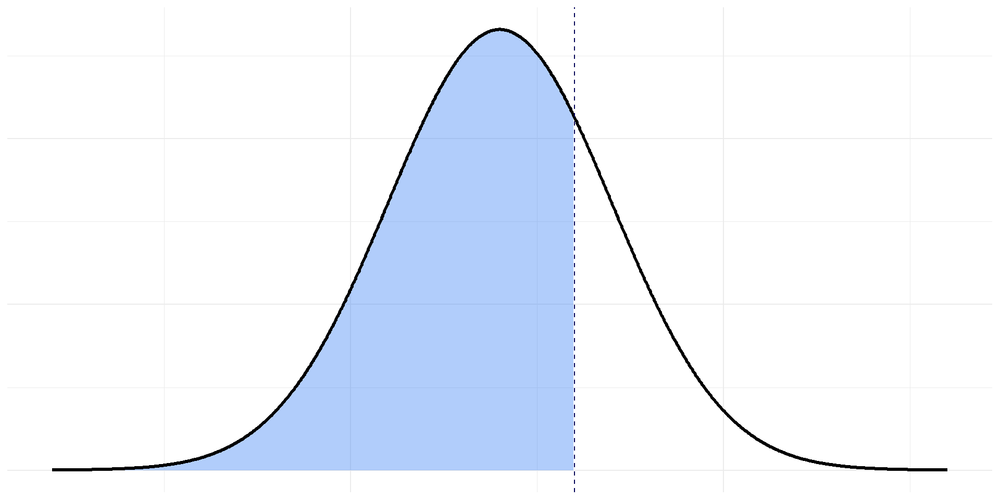
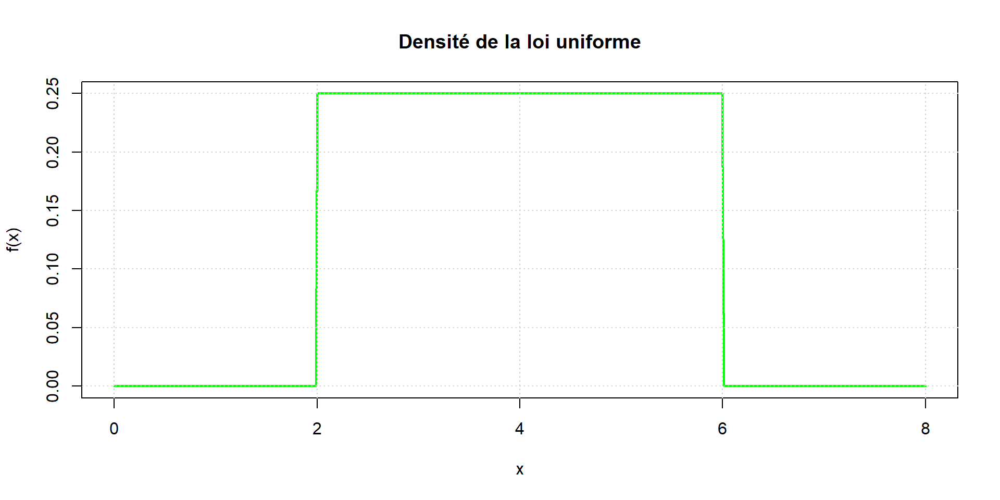
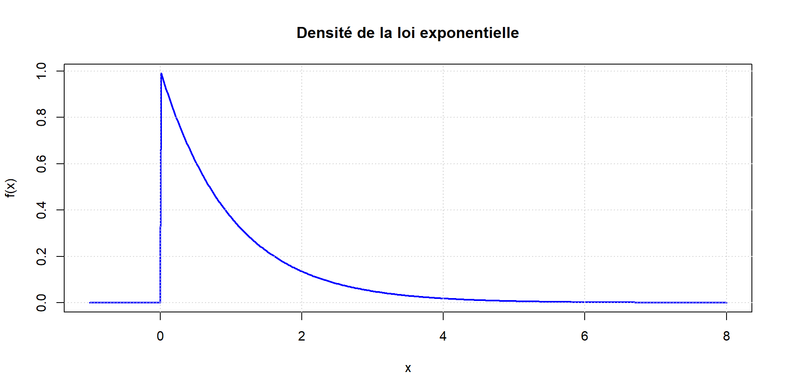
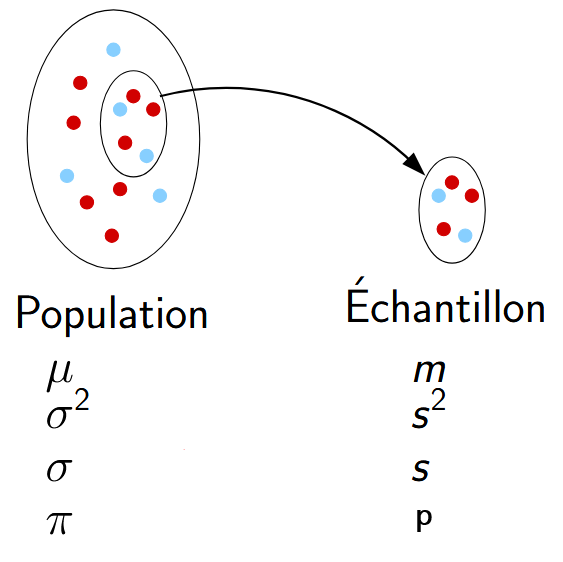
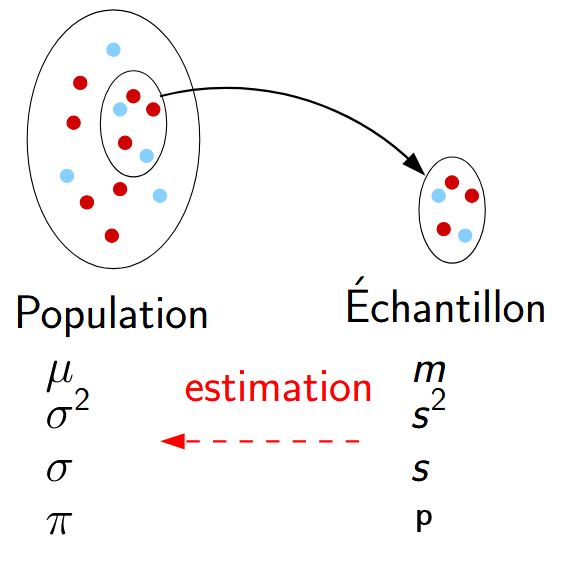

Combinatoire
Combinatoire
Statistiques et analyse de données
Organisation
| S2 | S3 | S4 | S5 | |
|---|---|---|---|---|
| Cours magistraux | 8 (12h) | 8 (12h) | 8 (12h) | 8 (12h) |
| Travaux dirigés | 8 (12h) | 8 (12h) | 8 (12h) | 8 (12h) |
| tot. | 16 (24h) | 16 (24h) | 16 (24h) | 16 (24h) |
- Cours magistraux : pas besoin d’apporter son ordinateur
- Travaux dirigés : venir avec son ordinateur
https://ant0in3g.github.io/sTa7.html \(\to\) check votre sticker !

 Combinatoire
Combinatoire
Objectif de la combinatoire
Dénombrer des objets dans un ensemble fini.
Soit \(E_n\) un ensemble de \(n\) éléments.
Le nombre de manières de :
Ordonner (ou numéroter) les éléments de \(E_n\) est :
\[n!=1 \times 2 \cdots \times n \]
Choisir \(p\) éléments ordonnés dans \(E_n\) sans répétition , est :
\[ \begin{aligned} A_n^p & =n(n-1) \cdots(n-p+1) \\ & =\frac{n!}{(n-p)!} \end{aligned} \] (sans répétition : on ne peut reprendre un élément déjà choisi)
Choisir \(p\) éléments NON ordonnés dans \(E_n\) sans répétition est :
\[\binom{p}{n}=\frac{A_n^p}{p!}=\frac{n!}{p!(n-p)!} \] C’est aussi le nombre de parties à \(p\) éléments dans \(E_n\).
Choisir \(p\) éléments ordonnés dans \(E_n\) avec répétition est :
\[n^p \] (avec répétition : on est autorisé à reprendre un élément déjà choisi)
Choisir \(p\) éléments non ordonnés dans \(E_n\) avec répétition est :
\[\Gamma_n^p=\binom{p}{n+p-1}\] (avec répétition : on est autorisé à reprendre un élément déjà choisi)
Le triangle de Pascal permet de calculer simplement le coefficient binomial \(\binom{n}{k}\). On choisit la ligne correspondant à \(n\) et la colonne correspondant à \(k\), et le nombre à leur intersection est le coefficient binomial.
Exemple :
\[\binom{7}{3} = 35\]
 Introduction aux probabilités
Introduction aux probabilités
 Variables aléatoires discrètes
Variables aléatoires discrètes
- Une variable aléatoire est dite discrète si elle ne peut prendre ses valeurs que dans un ensemble discret, une suite de valeurs isolées \[\left\{x_1, x_2, \ldots x_i, \ldots\right\}\]
Loi de Bernouilli
Utiliser dès qu’une situation est analogue au modèle suivant :
On considère une urne avec des boules blanches en proportion \(p\) et noires en proportion \(q=1-p\).
On tire une boule.
On pose : \(X=1\) si la boule est blanche, et \(X=0\) sinon.
La loi de probabilité de cette variable aléatoire est: \[p(X=1)=p, \qquad p(X=0)=q=1-p\]
# Paramètre de la loi Bernoulli
p <- 0.3
# Valeurs possibles
x <- c(0, 1)
# Probabilités
proba <- c(1 - p, p)
# Tracé
barplot(proba,
names.arg = x,
col = "skyblue",
main = "un exemple de loi de Bernoulli sur R",
xlab = "x",
ylab = "P(X=x)")
Loi binomiale
- Le modèle correspondant est le suivant :
- dans la même urne, on tire \(n\) boules avec remise.
- \(X\) est le nombre de boules blanches obtenues.
- On a alors \[P(X=k) = \binom{k}{n} \ p^k q^{n-k}\]
Remarque : Si le nombre de boules dans l’urne est très grand et le nombre de tirages petit, on peut considérer que le fait de remettre ou non les boules change peu le résultat. On pourra alors utiliser la loi binomiale même s’il n’y a pas remise.

Loi hypergéométrique
Pas exigible.
Le même modèle est le même que pour la loi binomiale, mais on fait les \(n\) tirages sans remise.
\(X\) est encore le nombre de boules blanches obtenues.
Soit \(a\) le nombre de boules blanches dans l’urne, \(b\) le nombre de boules noires, et \(a+b\) le nombre total.
On a (en raisonnant sur le nombre de cas favorables) : \[P(X=k)=\frac{\binom{k}{a} \binom{n-k}{b}}{\binom{n}{a+b}}\]
Remarque : Contrairement à la loi binomiale, l’utilisation de cette loi nécessite la connaissance du nombre total \(a+b\) d’éléments dans l’urne.

Loi de Pascal
Pas exigible.
Dans la même urne, on tire maintenant des boules avec remise jusqu’à obtenir \(r\) boules blanches (\(r\) fixé).
\(X\) est le nombre de tirages nécessaires pour obtenir \(r\) boules blanches.
On a, pour tout \(k \geq r\) : \[P(X=k)=\binom{r-1}{k-1} p^r q^{k-r}\]

Loi de Poisson
Pas exigible.
Utiliser dans une situation consistant à compter le nombre d’évènements pendant une durée donnée.
La variable \(X\) est le nombre d’évènements apparus pendant cette durée.
On a pour tout \(k \geq 0\) : \[p(X=k)=e^{-\lambda} \frac{\lambda^k}{k!}\]
où \(\lambda\) est un paramètre positif fixé.

Paramètres d’une variable aléatoire discrète
| Espérance | Variance | |
|---|---|---|
| Loi de Bernouilli | \(\displaystyle p\) | \(\displaystyle p q\) |
| Loi binomiale | \(\displaystyle n p\) | \(\displaystyle n p q\) |
| Loi hypergéométrique | \(\displaystyle n p\) | \(\displaystyle n p q \ \frac{a+b-n}{a+b-1}\) |
| Loi de Pascal | \(\displaystyle \frac{r}{p}\) | \(\displaystyle \frac{q}{p^2}\) |
| Loi de Poisson | \(\displaystyle \lambda\) | \(\displaystyle \lambda\) |
Ce tableau n’est pas connaitre !
 Variables aléatoires continues
Variables aléatoires continues
Une variable aléatoire est dite continue lorsqu’elle peut prendre ses valeurs dans tout un intervalle de \(\mathbb{R}\).
On se limite à l’étude de la loi normale.
La loi normale \(\mathcal{N}\left(\mu,\sigma\right)\)
Si \(X\) suit une loi normale, on lui associe une courbe :
\[y = \frac{1}{\sigma \sqrt{2 \pi}} \ \exp \left(-\frac{(x-\mu)^2}{2 \sigma^2}\right)\]
cette relation n’est pas à retenir !

cette courbe est symétrique par rapport à l’axe \(x= \mu\)
à retenir : courbe en “forme de cloche”

l’axe en pointillé est \(x=a\)
l’aire bleutée représente : \(\displaystyle P(X\leq a)\)
Important
Pour chaque \(\mu\), \(\sigma\), il existe une loi normale de moyenne \(\mu\) et d’écart-type \(\sigma\).
On la note \(\mathcal{N}(\mu, \sigma)\)
Cas particulier : \(\mu=0\) et \(\sigma=1\) désignera la loi normale centrée réduite : \(\mathcal{N}(0,1)\).
L’aire sous la courbe de \(-\infty\) à \(+\infty\) est égale à 1 ! \[P\left(-\infty \leq X \leq +\infty\right)=1\]
Propriétés de la loi normale
Exemple de lois normales avec des moyennes différentes et le même écart-type

Exemple de lois normales avec même moyenne et des écart-types différents

Calculs pratiques pour la loi normale centrée réduite
\(X\) suit une loi normale centée réduite \(\mathcal{N}(0,1)\)
On va utiliser la table de la loi normale.
Sur la table de la loi normale on lit (\(a>0\)):
\[P(X \leq a) = \Pi(a)\]
Exemple 1 : \(P(X \leq a)\)
On suppose qu’une certaine variable \(X\) suit la loi normale centée réduite \(\mathcal{N}(0,1)\).
Pour quelle proportion d’individus est-ce que \(X \leq 1,56\) ?
On cherche \(\displaystyle P(X \leq 1,56) = \Pi(1,56)\).
On cherche \(1,56\) dans la table
On peut alors lire \(\Pi(1,56) = 0,9406\)
Pour \(94,06 \%\) des individus, la variable \(X\) est inférieure à \(1,56\).
Exemple 2 : \(P(X \geq a)\)
On suppose qu’une certaine variable \(X\) suit la loi normale centée réduite \(\mathcal{N}(0,1)\).
Pour quelle proportion d’individus est-ce que \(X \geq 1,49\) ?
On cherche \(\displaystyle P(X \geq 1,49)\).
On écrit d’abord \[P(X \geq 1,49)=1-P(X \leq 1,49)=1-\Pi(1,49)\]
On cherche \(1,49\) dans la table
On peut alors lire \(\Pi(1,49) = 0,9319\)
Donc \(P(X \geq 1,49) = 1 - 0.9319 = 0,0681\)
Pour \(6,81 \%\) des individus, la variable \(X\) est supérieure à \(1,49\).
Exemple 3 : \(P(X \leq -a)\)
On suppose qu’une certaine variable \(X\) suit la loi normale centée réduite \(\mathcal{N}(0,1)\).
Pour quelle proportion d’individus est-ce que \(X \leq -1,1\) ?
On cherche \(\displaystyle P(X \leq-1,1)\)
On remarque (par symétrie) que \[P(X \leq -1,1) = P(X \geq 1,1) = 1 - P(X \leq 1,1)\]
On cherche \(1,49\) dans la table
On peut alors lire \(\Pi(1,1) = 0,8643\)
Donc \(P(X \leq -1,1) = 1 - 0.8643 = 0,1357\)
Pour \(13,57 \%\) des individus, la variable \(X\) est inférieure à \(-1,1\).
Exemple 4 : \(P(X \geq -a)\)
On suppose qu’une certaine variable \(X\) suit la loi normale centée réduite \(\mathcal{N}(0,1)\).
Pour quelle proportion d’individus est-ce que \(X \geq -0,76\) ?
On cherche \(\displaystyle P(X \geq -0.76)\)
On remarque (par symétrie) que \[P(X \geq -0,76) = P(X \leq 0,76)\]
On cherche \(0,76\) dans la table
On peut alors lire \(\Pi(0,76) = 0,7764\)
Donc \(P(X \geq -0,76) = 0,7764\)
Pour \(77,64 \%\) des individus, la variable \(X\) est supérieure à \(-0,76\).
Exemple 6 : Lecture inversée de la table
On suppose qu’une certaine variable \(X\) suit la loi normale centée réduite \(\mathcal{N}(0 ; 1)\).
On souhaite déterminer \(t\)t tel que \(\displaystyle P( X \leq t) = 0,9664\).
On cherche dans la table la probabilité \(0,9664\)
En lisant les coefficients sur la ligne et la colonne de \(0,9664\), on détermine \(t\)
On trouve \(t=1,83\)
Donc \(P(X \leq 1,83)=0,9664\).
Calculs pratiques pour une loi normale quelconque
\(X\) suit une loi normale quelconque \(\mathcal{N}(\mu,\sigma)\)
Pour les calculs avec \(\mathcal{N}(\mu, \sigma)\), on se ramène à la loi \(\mathcal{N}(0,1)\)
Centrer et réduire une loi normale
Si
\[X \sim \mathcal{N}(\mu, \sigma)\] alors \[\frac{X-\mu}{\sigma} \sim \mathcal{N}(0,1)\]
On dit que l’on centre et réduit \(X\).
\[ \]
Exemple 5 :
On suppose qu’une certaine variable \(X\) suit la loi normale \(\mathcal{N}(11 ; 2)\).
Pour quelle proportion d’individus est-ce que \(X \leq 14\) ?
On cherche \(P(X \leq 14)\).
On centre et on réduit \(X\) : \[Z= \frac{X-11}{2} \sim \mathcal{N}(0,1)\]
On a alors \[P(X \leq 14) = P\left(\frac{X-11}{2} \leq \frac{14-11}{2}\right) = P(Z \leq 1,5)\]
On cherche \(1,5\) dans la table.
On peut alors lire \(\Pi(1,5) = 0,9332\)
Donc \(P(Z \leq 1,5) = 0,9332\)
Donc \(P(X \leq 14) = 0,9332\)
Pour \(93,32 \%\) des individus, la variable \(X\) est supérieure à \(14\).
Autres lois continues
Pas exigible.
Loi uniforme
La probabilité que la valeur de \(X\) tombe dans un intervalle de longueur fixée reste la même quelque soit cet intervalle inclus dans \([a, b]\).
On doit alors avoir \(f(x)\) constante, donc \[f(x)-\frac{1}{b-a}\] sur \([a, b]\), et \(f(x)=0\) en dehors, afin d’obtenir une aire totale de \(1\)
On a \(E(X) = \dfrac{a+b}{2}\) et \(\sigma(X) = \sqrt{\dfrac{(b-a)^2}{12}}\)

Loi exponentielle
Souvent utilisée pour des questions de fiabilité
Elle est définie pour \(x \geq 0\) par \[f(x)=\frac{1}{a} e^{-x / a}\] et \(f(x)=0\) pour \(x<0\)
On a \(E(X) = a\) et \(\sigma(X) = a\)

 Notions sur l’échantillonnage
Notions sur l’échantillonnage

Population \(\to\) proportion vert : 10/30
Le choix d’une taille de l’échantillon n’est pas simple
Plus il y a d’individus, plus le degré de précision de l’enquête sera fort
Les contraintes pratiques nous obligent à limiter le nombre d’individus
2 types de méthodes d’échantillonnage :
- échantillonnage probabiliste
- échantillonnage NON probabiliste
Objectif : le plus représentatif possible !
 Les méthodes d’échantillonnage probabilistes
Les méthodes d’échantillonnage probabilistes
Exemple utilisé pour illustrer ces méthodes :
Il y a environ 3 millions étudiants en France.
On souhaite savoir si les étudiants sont satifaits ou non de leur formation.
Ne pouvant pas accéder à tous les étudiants, on décide de former un échantillon de 100 000 étudiants (taille arbitraire) le plus représentatif possible.
Échantillonnage aléatoire simple
Tous les individus ont une chance égale d’être sélectionné.
Constitution de l’échantillon :
- échantillonnage aléatoire simple “sans remise” : cas le plus courrant
\(\to\) quand on sélectionne uniquement des individus différents
- échantillonnage aléatoire simple “avec remise” : si l’on n’a pas accès à beaucoup d’individus
\(\to\) quand un ou plusieurs individus peuvent être sélectionnés plusieurs fois
Exemple :
Avec un échantillonnage aléatoire simple avec remise, on sélectionne les 100 000 étudiants au hasard parmi les 3 millions.
Échantillonnage systématique
- Constitution de l’échantillon :
- on numérote tous les individus de la population (dans l’ordre que l’on veut)
- on tire un individu au hasard parmi les premiers numéros, disons le \(i\)-ème
- on se fixe un écart de \(m\) individus
- on compléte l’échantillon en prenant les individus correspondants aux numéros :
- \(i+m\)
- \(i+2 m\)
- \(i+3 m\)
- et ainsi de suite
Exemple :
On numérote tous les étudiants
On choisit, par exemple, le troisième de la liste
On se fixe un écart de 200
On complète l’échantillon les étudiants numérotés
- 203
- 403
- 603
- et ainsi de suite jusqu’au 100 000-ème étudiant
- 203
Échantillonnage aléatoire avec probabilité inégale
L’échantillonnage aléatoire avec probabilités inégales part du principe que certains individus ont plus ou moins de chances d’être sélectionnés
Exemple :
On peut, par exemple, pondérer la probabilité de sélectionner un étudiant en fonction de la taille de son université
On peut alors accorder plus d’importance aux étudiants des petites universités pour augmenter leurs chances de figurer dans l’échantillon
Échantillonnage stratifié
Une strate est un groupe homogène d’individus dans une population
Si la population peut se diviser en plusieurs strates pertinentes dans le contexte, alors il est judicieux de les prendre en compte pour constituer un échantillon le plus représentatif possible.
L’échantillonnage stratifié consiste à faire :
- un échantillonnage aléatoire simple (sans remise) dans chaque strate,
- et de combiner tous les échantillons obtenus pour constituer l’échantillon final
Exemple :
On peut différencier les étudiants de Licence ou en Master
Avec un échantillonnage aléatoire simple sans remise, on peut constituer :
un échantillon dans la strate des étudiants en Licence, disons de taille 70 000
et un autre dans la strate des étudiants en Master, disons 30 000
L’échantillon final est constitué de ces deux échantillons.
Échantillonnage par grappes
- Si la population se divise en plusieurs groupes d’individus, l’échantillonnage en grappes consiste à :
- choisir au hasard plusieurs de ces groupes
- une fois un groupe sélectionné, on considère tous ses individus
- l’échantillon est donc l’ensemble des individus des groupes sélectionnés
- Préférable de choisir un grand nombre de petits groupes, plutôt qu’un petit nombre de gros groupes
Exemple :
On sélectionne au hasard quelques universités
On considère tous les étudiants de celles-ci
Le nombre d’universités sélectionnées est de telle sorte à ce que la taille de l’échantillon ne soit pas trop éloignée de 100 000
Échantillonnage à deux degrés
L’échantillonnage à deux degrés est une version “améliorée” de l’échantillonnage en grappes
Constitution de l’échantillon :
- on choisit au hasard des groupes
- dans chacun des groupes choisis, on sélectionne des individus avec une méthode probabiliste
Avantages :
- Plus souple sur le nombre de groupes à choisir
- On peut aller à plus de deux degrés en continuant le processus de sélection des individus.
Exemple :
On sélectionne au hasard quelques universités
On effectue un échantillonnage aléatoire simple des étudiants dans chacune de ces universités.
L’échantillon final se compose de tous les individus finalement sélectionnés.
On s’arrange pour que la taille de l’échantillon ne soit pas trop éloigné de 100 000
Échantillonnage à deux phases
- L’échantillonnage à deux phases permet :
- de révéler des strates inconnues au premier abord,
- de les utiliser pour obtenir un échantillon représentatif.
- Constitution de l’échantillon :
- on choisit au hasard des individus (comme avec un échantillonnage aléatoire simple)
- on pose une (ou plusieurs) question discriminante à ces individus
- on sélectionne les individus en fonction de leurs réponses (on choisit uniquement les individus qui ont formulé une certaine réponse, ou on crée des strates dans l’échantillon déjà formé, et on poursuit avec un sondage stratifié ou autre, etc.).
Exemple :
- Avec un échantillonnage aléatoire simple, on forme
un premier échantillon d’étudiants,
puis on leur pose une unique question : “Avez-vous été assidus pendant les cours?”
On ne conserve que les étudiants qui ont répondu “oui”
On peut alors concentrer l’enquête de satisfaction de la formation que sur eux
 Les méthodes d’échantillonnage NON probabilistes
Les méthodes d’échantillonnage NON probabilistes
Exemple utilisé pour illustrer ces méthodes :
Il y a environ 3 millions étudiants en France.
On souhaite savoir si les étudiants sont satifaits ou non de leur formation.
Ne pouvant pas accéder à tous les étudiants, on décide de former un échantillon de 100 000 étudiants (taille arbitraire) le plus représentatif possible.
Échantillonnage de commodité ou à l’aveuglette
L’échantillonnage de commodité ou à l’aveuglette consiste à sélectionner les individus dont on a immédiatement accès, sans discrimination particulière.
Exemple :
On va dans les universités les plus proche
On demande aux étudiants que l’on croise s’ils sont contents ou non de leur formation.
On constitu ainsi un échantillon de taille 100 000 sans trop de problème
Échantillonnage volontaire
L’échantillonnage volontaire considère les individus qui sont volontaires pour participer à l’enquête
Les individus se sélectionnent eux-mêmes.
Il peut y avoir une récompense en jeu.
Exemple :
- Un café est offert aux 100 000 premiers étudiants de France qui répondront à la question :
“Êtes-vous contents de votre formation ?”
Échantillonnage au jugé
L’échantillonnage au jugé consiste à sélectionner uniquement les individus qui semblent être dans le cœur de cible de l’enquête.
Il repose sur des critères subjectifs et des idées préconçues.
Exemple :
On va dans les universités les plus proche
On demande aux étudiants que l’on croise et qui paraissent sérieux s’ils sont contents ou non de leur formation.
\(\to\) très subjectif !
- On constitue ainsi un échantillon de taille 100 000 sans trop de problème
\(\to\) pas représentatif de l’ensemble des étudiants de France
Échantillonnage par quotas
L’échantillonnage par quotas repose sur un résultat statistique déjà connu sur la répartition de la population
OU sur un quota d’individus que l’on impose
Partant d’une taille d’échantillon choisie, l’idée est de former un échantillon d’individus dont l’appartenance aux groupes respecte ces pourcentages
Il n’y a pas de règle sur la méthode pour choisir les individus, du moment que les quotas sont respectés
Exemple :
On sait qu’il y a :
- \(~ 70 \%\) étudiants en Licence
- et \(~ 30 \%\) d’étudiants en Master
On se fixe une taille d’échantillon de 100 000
On sélectionne :
- \(100 000 \times 0.7 = 70 000\) étudiants en Licence
- et \(100 000 \times 0.3 = 30 000\) étudiants en Master
- La sélection de ces étudiants peut se faire comme on veut
Échantillonnage boule de neige ou de réseaux
Lorsque l’on s’intéresse à une population très spécifique, on peut utiliser l’échantillonnage boule de neige
Cela consiste à interroger des individus par la méthode au jugé, puis d’interroger leur connaissances (amis, collègues, etc.)
 Echantillonnage en pratique
Echantillonnage en pratique
On s’interesse ici uniquement à l’échantillonage aléatoire simple.

Echantilon de taille \(n\)
Paramètres dans la population : Connues
Paramètres dans l’échantillon : Inconnues
Objectif : estimer les paramètres dans l’échantillon
- pour les moyennes : \(\quad\mathcal{N}\left(m,\dfrac{\sigma}{\sqrt{n}}\right)\) \[m = \mu \quad \mbox{ et } \quad s_m = \dfrac{\sigma}{\sqrt{n}}\]
- pour les proportions : \(\quad\mathcal{N}\left(p,\sqrt{\dfrac{p(1-p)}{n}}\right)\) \[p = \pi \quad \mbox{ et } \quad s_p = \sqrt{\dfrac{p(1-p)}{n}}\]
Exemple 1 :
Selon une étude menée depuis quatre ans, la moyenne des istomien-nes à leur mémoire de fin d’étude s’élève à 13, avec un écart type de 3. On choisit d’une manière aléatoire un échantillon de 20 étudiants.
Question
Calculer la probabilité que cet échantillon ait une moyenne \(>11\).
Solution
cf vos notes.
Exemple 2 :
Selon les archives de l’ISTOM, le \(\%\) des filles primées lors de la remise des diplômes s’élève à \(60 \%\). On choisit d’une manière aléatoire un échantillon de 30 étudiants primés.
Question
Calculer la probabilité que cet échantillon soit composé de moins de \(55 \%\) de filles.
Solution
cf vos notes.
 Estimateurs et estimations
Estimateurs et estimations
 Estimations en pratique
Estimations en pratique

Echantilon de taille \(n\)
Paramètres dans la population : Inconnus
Paramètres dans l’échantillon : Connues
Objectif : estimer les paramètres dans la population
Deux types d’estimations :
- Estimation ponctuelle
- Intervalles de confiance :
- moyenne
- \(\sigma\) connu
- \(\sigma\) inconnu
- proportion
- moyenne
Estimation ponctuelle
\(\mu = m\)
\(\pi = f\)
\(\sigma = \sqrt{\dfrac{n}{n-1}} \ s\)
Exemple :
L’association MaCLoc distribue des paniers de légumes chaque semaine depuis plusieurs années.
On suppose que la variable aléatoire \(X\) qui, à chaque panier tiré au hasard, associe son poids, suit une loi normale.
Soucieux de l’equité pour les adhérents, on prélève un échantillon de 50 paniers à intervalle régulier. La moyenne s’élève à \(450 ~g\) et son écart-type à \(40 ~g\).
Question
Donner une estimation ponctuelle du poids moyen et de l’écart type des paniers distribués fabriqués par l’association MaCLoc.
Solution
cf vos notes.
Intervalle de confiance
Pour une moyenne
- Situation A : \(\sigma\) connu
L’intervalle de confiance vaut :
\[\left[m - t \ \dfrac{\sigma}{\sqrt{n}} \ ; \ m + t \ \dfrac{\sigma}{\sqrt{n}} \right]\]
- Situation B : \(\sigma\) inconnu
L’intervalle de confiance vaut :
\[\left[m - t \ \dfrac{\sigma}{\sqrt{n}} \ ; \ m + t \ \dfrac{\sigma}{\sqrt{n}} \right]\]
où \(\sigma\) est cette fois une valeur estimée (ponctuelle) à partir de l’échantillon
Pour une proportion : Situation C
L’intervalle de confiance vaut :
\[\left[p - t \ \sqrt{\dfrac{p(1-p)}{n}} \ ; \ \mu + t \ \sqrt{\dfrac{p(1-p)}{n}} \right]\]
Conditions :
- \(np >5\)
- \(n(1-p)>5\)
- \(np(1-p)>5\)
Valeur de t pour un seuil de rsique donné
seuil de risque : \(\alpha\)
souvent \(\alpha = 0.05 = 5 \%\)seuil de confiance : \(1-\alpha\)
souvent \(1- \alpha = 0.95 = 95 \%\)\(t\) est défini (pour la loi normale) comme : \[P\left(-t<X<t\right) = 1 - \alpha\] On a donc \[\begin{align*} P\left(-t<X<t\right) = 1 - \alpha &\Longleftrightarrow 2 P\left(X<t\right) - 1 = 1 - \alpha \\ &\Longleftrightarrow 2 \Pi\left(t\right) - 1 = 1 - \alpha \\ &\Longleftrightarrow \Pi\left(t\right) = \frac{2 - \alpha}{2} \\ \end{align*}\] Lecture inverse sur la table de la loi normale !
Exemple : Pour \(\alpha = 0.05\), on a \(\Pi\left(t\right) = 0.975\) donc \(t=1.96\).
Exemple A :
Toujours avec l’association MaCLoc qui distribue des paniers de légumes chaque semaine depuis plusieurs années.
On suppose que la variable aléatoire \(X\) qui, à chaque panier tiré au hasard, associe son poids, suit une loi normale de moyenne inconnue et d’écart-type de \(30 ~g\)
On constitue un échantillon de 100 paniers et on calcul sa moyenne qui s’élève à \(420 ~g\).
Question
Donner une estimation du poids moyen par intervalle de confiance, au seuil de confiance de \(95 \%\)
Solution
cf vos notes.
Exemple B :
Un échantillon aléatoire de coopératives de coton a donné la série statistique suivante :
| \(X_i\) Chiffre d’affaires |
\(n_i\) (Coopérative) |
|---|---|
| \([0 ; 4[\) | 4 |
| \([4 ; 8]\) | 10 |
| \([8 ; 12[\) | 12 |
| \([12 ; 16[\) | 9 |
| \([16 ; 20[\) | 5 |
Questions
Donner une estimation ponctuelle de la moyenne et de l’écart-type de la population.
Donner une estimation du CA moyen par intervalle de confiance, au niveau de confiance de \(99 \%\).
Solution
cf vos notes.
Exemple C :
Une étude sur l’utilisation de machine mécanisée est menée dans les exploitations agricole au Rwanda, ce afin d’estimer le taux d’utilisation.
L’étude d’un échantillon de 100 fermes choisies d’une manière aléatoire conclut à un taux de \(18 \%\).
Questions
Dans quel intervalle de confiance peut-on situer le taux d’utlisation dans les fermes au Rwanda, au seuil de risque de \(5 \%\) ?
Solution
cf vos notes.